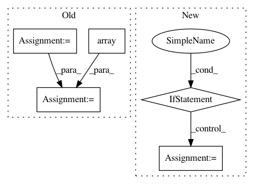

a410b46917e3c34e74f67e6262cfa42e8fc7849c,lib/streamlit/image_proto.py,,marshall_images,#Any#Any#Any#Any#Any#,23
Before Change
else:
// extra map enables support for arrays of PIL images
try:
numpy_imgs = np.array(img)
except TypeError:
LOGGER.debug(f"Unable to convert {type(img)} directly to an array.")
numpy_imgs = np.array(list(map(np.array, img)))
numpy_imgs = convert_to_uint8(numpy_imgs, clamp)
numpy_imgs = convert_to_4_color_channels(numpy_imgs)
numpy_imgs = convert_imgs_to_list(numpy_imgs)
pil_imgs = list(map(Image.fromarray, numpy_imgs))
captions = convert_captions_to_list(captions, len(pil_imgs))
// Load it into the protobuf.
After Change
proto_img = proto_imgs.imgs.add()
proto_img.caption = caption
if image_type == IMAGE_TYPE_URL:
proto_img.url = image_data
else:
img_bytes = BytesIO()
image_data.save(img_bytes, format="PNG")
img_bytes = img_bytes.getvalue()
proto_img.base_64_png = base64.b64encode(img_bytes).decode("utf-8")
// Assign the width parameter.
proto_imgs.width = width
def convert_to_uint8(imgs, clamp):
In pattern: SUPERPATTERN
Frequency: 3
Non-data size: 5
Instances
Project Name: streamlit/streamlit
Commit Name: a410b46917e3c34e74f67e6262cfa42e8fc7849c
Time: 2019-02-27
Author: tconkling@gmail.com
File Name: lib/streamlit/image_proto.py
Class Name:
Method Name: marshall_images
Project Name: deepmipt/DeepPavlov
Commit Name: c672738b39c8f739551da0d88991a2fedfba3e14
Time: 2018-10-04
Author: puleon@mail.ru
File Name: deeppavlov/models/ranking/metrics.py
Class Name:
Method Name: recall_at_k
Project Name: deepmipt/DeepPavlov
Commit Name: c672738b39c8f739551da0d88991a2fedfba3e14
Time: 2018-10-04
Author: puleon@mail.ru
File Name: deeppavlov/models/ranking/metrics.py
Class Name:
Method Name: rank_response